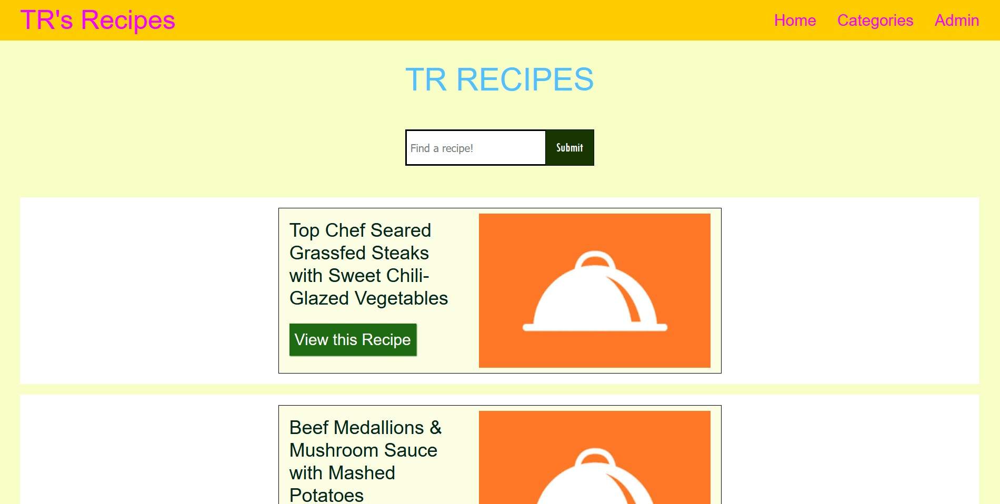

Creating a Dynamic PHP Website
PHP / MYSQL/ DATABASES / RECIPES / CRUD
Creating a dynamic recipe website with PHP and MySQL that allows the Users and Admin to Create, Read, Update, and Delete any recipe entry
PROJECT INFO
- Project for IDM 241 Scripting class
- Solo work
- September 2021 - December 2021
ROLES AND RESPONSIBILITIES
- PHP Research
- Alpha, Beta, and Final Build
- Creating High-Fidelity Protoype for the final version
TOOLS USED
- PHP
- MySQL
- Figma
- HTML
- CSS